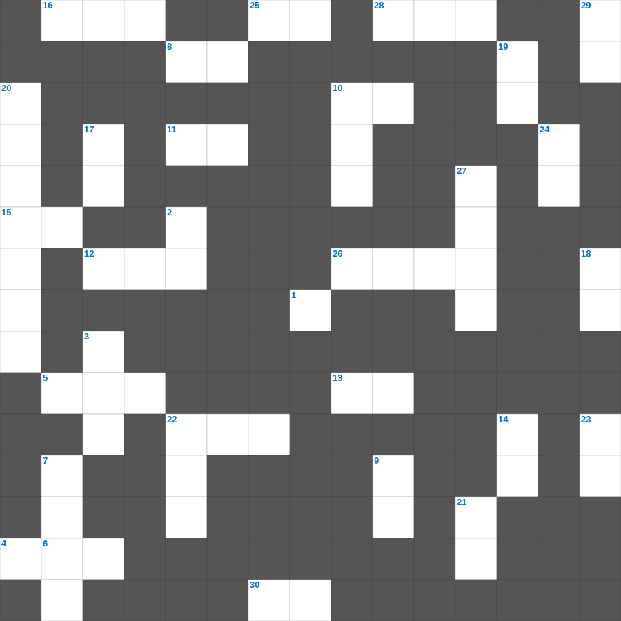

히브리서 마스터 100
📌 서비스 정의
십자가로세로는 교회 주보와 주일학교에서 사용할 수 있는 성경 기반 가로세로 퍼즐 서비스입니다. 성경 인물, 사건, 핵심 구절을 바탕으로 제작되었습니다. 온라인 풀이 및 인쇄 기능을 제공합니다.
📖 히브리서란?
히브리서는 예수 그리스도가 구약의 모든 제사와 제사장 제도보다 우월한 영원한 대제사장임을 설명하며, 흔들리지 않는 믿음으로 나아갈 것을 권면합니다.
📚 히브리서의 주요 사건·주제
천사보다 우월하신 그리스도 · 대제사장이신 그리스도 · 새 언약과 옛 언약의 비교 · 믿음의 본질과 믿음의 선진들(히브리서 11장) · 흔들리지 않는 나라에 대한 권면
히브리서를 주제로 한 히브리서 낱말 퍼즐입니다. 35개의 단어를 맞춰보세요! 가로세로 낱말 퍼즐 형식으로 히브리서의 핵심 내용을 재미있게 복습할 수 있습니다.

📝 가로 힌트
1. 누구에게든지 악으로 악을 갚지 말게 하고... 항상 이것을 따르라
4. 바울이 빌립보 교인들을 생각할 때마다 하나님께 이것하며 간구함
5. 하나님은 이스라엘의 이것이 되시려고 애굽에서 인도하심
6. 너희 원수를 이것 하며 너희를 미워하는 자를 선대하며
8. 마리아의 찬가(Magnificat): 내 영혼이 주를 이것 하며
9. 유다서 1장 15절: 주를 거슬러 한 모든 완악한 이것
10. 다윗에게 하나님의 언약을 전달한 선지자
11. 형제들아 서로 이것하지 말라
12. 사랑 안에 이것이 없고 온전한 사랑이 이것을 내쫓나니
13. 하나님은 한 분이시요 또 하나님과 사람 사이에 이것자도 한 분이시니 곧 사람이신 그리스도 예수라
15. 경건의 이것이여 그렇지 않다 하는 이 없도다 그는 육신으로 나타난 바 되시고
16. 디도가 사역하던 섬의 이름
22. 다윗이 피난 갈 때 저주했던 사울 집안 사람
23. 너희 믿음의 확실함은 이것으로 연단하여도 없어질 금보다 더 귀하여
25. 미가라는 사람이 자기 집에 만든 것
26. 여로보암이 백성들을 예루살렘에 못 가게 하려 만든 것
28. 두 번째로 보내어 감람나무 잎사귀를 물어온 새
30. 하나님을 모르는 자들과 우리 주 예수의 복음에 이것하지 않는 자들에게 형벌을 내리시리니
📝 세로 힌트
2. 인구 조사 대상 '이십 세 이상으로 이것에 나갈 만한 자'
3. 느헤미야에게 예루살렘의 소식을 전해준 형제
6. 여호수아가 죽은 후 이스라엘을 다스린 지도자들
7. 바울이 베스도 총독에게 요구한 권리: 내가 이것에게 상소하노라
9. 태초에 이것이 계시니라 이 이것이 하나님과 함께 계셨으니 이 이것은 곧 하나님이시니라
10. 나병을 고치기 위해 엘리사를 찾아온 아람의 군대 장관
14. 헤롯이 세례 요한의 머리를 무엇에 담아 소반에 가져왔나
17. 빌레몬이 주 예수와 및 모든 성도에 대하여 가진 이것과 사랑을 들음이네
18. 여자들도 이와 같이 정숙하고 이것하지 아니하며 절제하며 모든 일에 충성된 자라야 할지니라
19. 솔로몬이 성전 건축을 위해 백향목을 들여온 나라
20. 사무엘을 돌보았던 엘리 제사장의 두 아들
21. 피를 먹는 자는 백성 중에서 이것 되리라
22. 다윗이 블레셋 망명 시절 거주했던 성읍
23. 주의 이름을 부르는 자마다 이것에서 떠날지어다 하였느니라
24. 헤롯의 누룩과 바리새인들의 누룩을 이것하라
27. 성막 기구를 메고 운반하는 책임을 맡은 지파
29. 누구든지 예수를 하나님의 이것이라 시인하면 하나님이 그의 안에 거하시고 그도 하나님 안에 거하느니라
🧩 이 퍼즐에서 배우는 내용
이 퍼즐은 히브리서 마스터 100의 핵심 단어와 개념을 자연스럽게 복습할 수 있도록 구성되었습니다. 주일학교 수업이나 개인 성경공부에서 학습 내용을 점검하는 용도로 바로 활용할 수 있습니다.
🧑🏫 교회 교육 자료 활용
이 퍼즐은 주일학교 교재 추천 자료로 활용할 수 있고, 주일학교 주보에 넣기 좋은 분량으로 구성되어 있습니다. 수업용 주일학교 교안에 활동지로 붙이거나, 예배 후 복습용 주일학교 공과교재로 바로 사용할 수 있습니다.
🏷️ 키워드
히브리서 낱말 퍼즐, 히브리서, 십자가로세로, 성경퀴즈, 말씀퀴즈, 가로세로퍼즐, 주일학교 교재 추천, 주일학교 주보, 주일학교 교안, 주일학교 공과교재